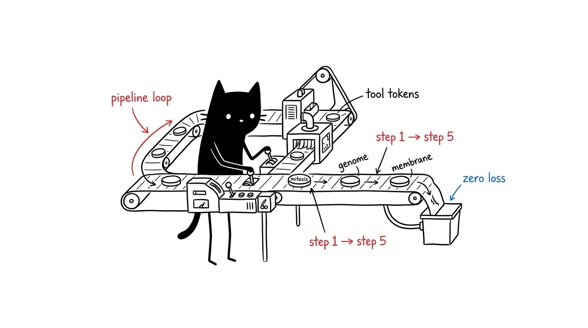

SPEC_03 // 1999AZZAR-MCPDOSSIER: CROSS_MCP_PIPELINES_A–F
Workflows
Standardized recipes combining cells into automated pipelines. Each lists the invocation sequence, the profiles it fits, and where state lands.

A — Autonomous Feature Engineering
Profiles: dev-workspace, headless-server. Full-stack change with restored context and tested output.
- Restore constraints. hela-genome:get_session_context — architecture and dependencies from
memory.db. - Decompose. hela-mitosis:analyze_with_sequential_thinking — atomic implementation steps.
- Edit. hela-membrane:write_file — minimal, production-ready changes.
- Test. hela-nucleus:execute_command — e.g.
npm test. - Commit memory. hela-genome:add_observation — record completion and relations.
B — Deep Research & Synthesis
Profiles: research, dev-workspace. Literature → live docs → summarized trade-offs → stored knowledge.
- Survey. hela-enzyme:research_brief — one-call Google + Wikipedia fan-out (preferred over manual chaining).
- Scrape. hela-cytosol:browser_navigate → browser_get_page_markdown — structured extraction from target URLs.
- Synthesize. hela-mitosis:llm_summarize — comparative analysis.
- Store. hela-genome:create_entity + add_observation — entities and findings in
memory.db. - Publish. hela-membrane:write_file — markdown summary under
docs/.
C — UI Design Synthesis & Verification
Profiles: web-devops, dev-workspace. Tokens → components → live render → DOM verification.
- Tokenize. hela-phenotype:generate_tokens / palette_fetch — OKLCH tokens, type scale, Tailwind config.
- Build. hela-membrane:write_file — component code and
tailwind.config.js. - Serve. hela-nucleus:execute_command — local dev server.
- Verify. hela-cytosol:browser_navigate → browser_screenshot — AX-tree check and rendered capture.
- Record. hela-genome:add_observation — milestone and snapshot reference.
D — Mobile Device Automation & UI Testing
Profiles: android-testing, all. Hardware bridge with token-efficient XML inspection (no screenshot loops).
- Discover. hela-receptor:device_list — ADB devices.
- Attach. hela-receptor:start_session — control stream.
- Inspect. hela-receptor:ui_dump — structural hierarchy.
- Act. hela-receptor:tap / input_text — touch and form automation.
- Record. hela-genome:add_observation — results in the memory graph.
E — Interactive PTY Orchestration
Profiles: dev-workspace, headless-server. Long builds, REPLs, and regex-driven automation.
- Spawn. hela-ribosome:agent_spawn — routed opencode agent (or session_spawn for raw PTY).
- Stream. hela-ribosome:session_read — bounded stdout/stderr chunks.
- Hook. hela-ribosome:session_hook — regex triggers with auto-response.
- Close. hela-ribosome:session_close — graceful teardown.
- Record. hela-genome:add_observation — logs and exit status.
F — Autonomous Blender 3D Modeling
Profiles: 3d-modeling, all. Prompt → geometry → render → asset.
- Plan. hela-plastid:generate_modeling_plan — phased procedural scripts.
- Execute. hela-plastid:execute_blender_code — geometry, materials, lighting.
- Render. hela-plastid:render_output — camera snapshot.
- Save. hela-plastid:save_blend — binary
.blendunderassets/. - Record. hela-genome:add_observation — asset metadata and render path.